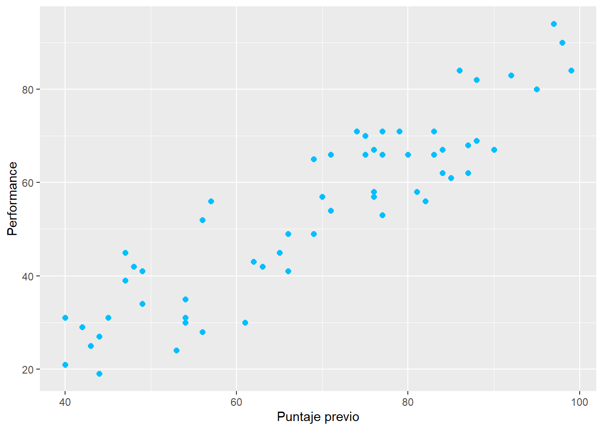
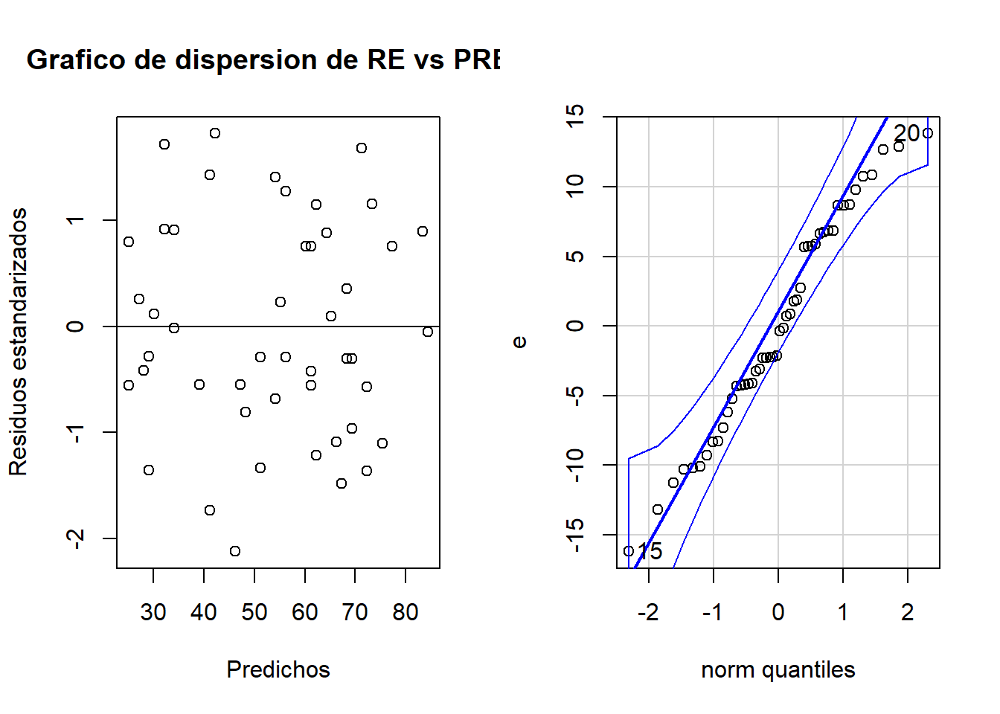
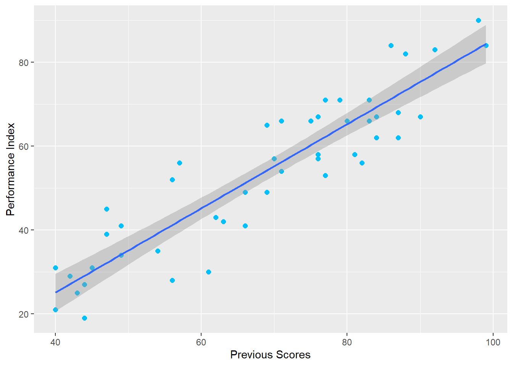
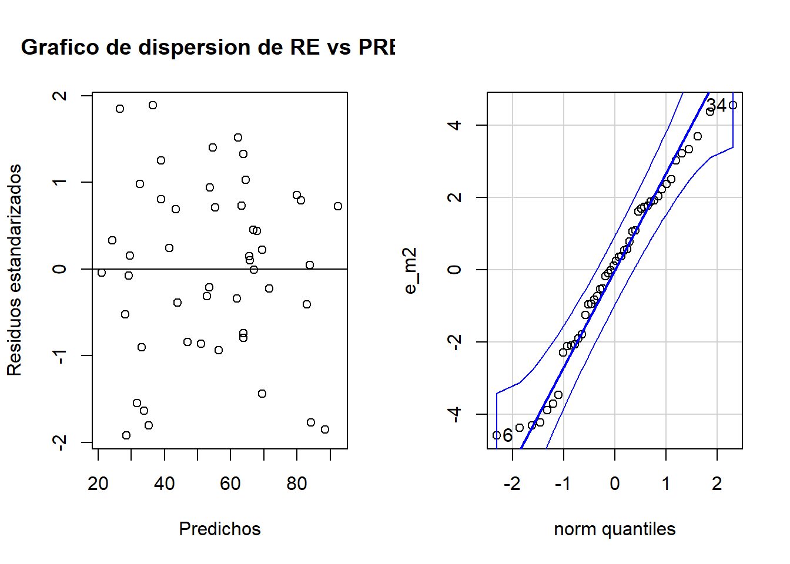

sum(is.na(df))# para saber cuantos na hay en la base de datos
[1] 0
¿Hay datos duplicados?
Código
any(duplicated(df))
[1] FALSE
Gráficos de dispersión
Código
ggpairs(df, diag =list(continuous ="blankDiag"))

Datos de entrenamiento y test
Código
set.seed(117)#setear la semilladf_rs <- df |>select(c(`Performance Index`,`Previous Scores`))df_split <-initial_split(df_rs,prop =0.8)#para conservar la proporción de las clasesdf_train <- df_split %>%training()df_test <- df_split %>%testing()# Número de datos en test y trainpaste0("Total del dataset de entrenamiento: ", nrow(df_train))
Evaluamos el supuesto de normalidad de manera gráfica y mediante una prueba de hipótesis.
Código
#Supuestospar(mfrow =c(1, 2))plot(pre, re, xlab="Predichos", ylab="Residuos estandarizados",main="Grafico de dispersion de RE vs PRED" )abline(0,0)qqPlot(e)

[1] 15 20
Normalidad
Código
shapiro.test(e)
Shapiro-Wilk normality test
data: e
W = 0.97082, p-value = 0.2725
Como el p-valor= 0.27 es mayor a \(\alpha\) =0.05, se asume normalidad en los datos.
Intervalo de Confianza
Se calcula el intervalo de confianza del 95% para la ordenada al origen y la pendiente del modelo de regresión.
Para cambiar el nivel de confianza cambiar el parámetro level
Se agrega la recta al gráfico y la banda de confianza.
Código
p +geom_smooth(method ="lm", se =TRUE)#para mostrar la banda de confianza

Entonces, se analiza el el modelo propuesto y como el p-valor dado que es menor al valor de significancia, entonces la pendiente es significativamente distinta a cero y por ende el modelo lineal propuesto es válido.
Código
summary(modelo1)
Call:
lm(formula = `Performance Index` ~ `Previous Scores`, data = df_train)
Residuals:
Min 1Q Median 3Q Max
-16.194 -4.540 -1.241 6.662 13.824
Coefficients:
Estimate Std. Error t value Pr(>|t|)
(Intercept) -15.07798 4.70850 -3.202 0.00247 **
`Previous Scores` 1.00446 0.06635 15.139 < 2e-16 ***
---
Signif. codes: 0 '***' 0.001 '**' 0.01 '*' 0.05 '.' 0.1 ' ' 1
Residual standard error: 7.743 on 46 degrees of freedom
Multiple R-squared: 0.8328, Adjusted R-squared: 0.8292
F-statistic: 229.2 on 1 and 46 DF, p-value: < 2.2e-16
Por el valor obtenido de \(\ R^2= 0.83\) se deduce que el modelo propuesto explica el 86,63% de la variabilidad de los datos.
Código
#coeficiente de determinación (en summary)summary(modelo1)$r.squared
\(\beta_{i}\) son los coeficientes de regresión parcial, ya que indican la influencia (parcial) de cada variable explicatoria sobre Y, cuando se mantiene constante la influencia de las otras variables explicatorias.
Código
set.seed(117)#setear la semilladf_rm <- df |>select(c(`Performance Index`,`Previous Scores`, `Hours Studied`))df_split_rm <-initial_split(df_rm,prop =0.8)#para conservar la proporción de las clasesdf_train_rm <- df_split_rm %>%training()df_test_rm <- df_split_rm %>%testing()# Número de datos en test y trainpaste0("Total del dataset de entrenamiento: ", nrow(df_train_rm))
[1] "Total del dataset de entrenamiento: 48"
Código
paste0("Total del dataset de testeo: ", nrow(df_test_rm))
par(mfrow =c(1, 2))plot(pre_m2, re_m2, xlab="Predichos", ylab="Residuos estandarizados",main="Grafico de dispersion de RE vs PRED" )abline(0,0)qqPlot(e_m2)

[1] 4 13
Se chequea normalidad
Código
shapiro.test(resid(modelo2))
Shapiro-Wilk normality test
data: resid(modelo2)
W = 0.98817, p-value = 0.9057
Vemos los resultados del modelo
Código
summary(modelo2)
Call:
lm(formula = `Performance Index` ~ `Previous Scores` + `Hours Studied`,
data = df_train_rm)
Residuals:
Min 1Q Median 3Q Max
-6.372 -1.421 0.001 1.747 6.387
Coefficients:
Estimate Std. Error t value Pr(>|t|)
(Intercept) -32.27495 1.81181 -17.81 <2e-16 ***
`Previous Scores` 1.04081 0.02226 46.77 <2e-16 ***
`Hours Studied` 2.96286 0.15470 19.15 <2e-16 ***
---
Signif. codes: 0 '***' 0.001 '**' 0.01 '*' 0.05 '.' 0.1 ' ' 1
Residual standard error: 2.588 on 45 degrees of freedom
Multiple R-squared: 0.9817, Adjusted R-squared: 0.9809
F-statistic: 1209 on 2 and 45 DF, p-value: < 2.2e-16
VIF (factor de inflación de la varianza o variance inflation factor)
Mide para cada X el aumento de la varianza del coeficiente de regresión debido a la correlación entre VE. Valores superiores a 5 son considerados indicativos de colinealidad.
De acuerdo a los resultados obtenidos, el modelo propuesto es significativo y válido (p-valor < \(\alpha=0.05\)), resultando significativo ambos coeficientes(p<0.05). El 98% de la variabilidad de los datos es explicado por el modelo de regresión múltiple.
Bonus track: Residuos parciales
Los gráficos de dispersión de Y vs cada X muestran el efecto sobre la variable respuesta (VR) de una variable explicatoria (VE) sin considerar el efecto de las otras VE. Los gráficos de residuos parciales muestran el efecto parcial sobre la VR de una VE cuando las otras VE son incluidas en el modelo y mantenidas constantes.
Código
library(faraway)prplot(modelo2,1)
Código
grid_x1 <-seq(min(df$`Hours Studied`), max(df$`Hours Studied`))grid_x2 <-seq(min(df$`Previous Scores`), max(df$`Previous Scores`))grid <-expand.grid(`Hours Studied`= grid_x1, `Previous Scores`= grid_x2)grid$y_pred <-predict(modelo2, newdata = grid)plot_ly(df, x =~`Hours Studied`, y =~`Previous Scores`, z =~`Performance Index`, type ="scatter3d", mode ="markers", name ="Datos") %>%add_trace(x = grid$`Hours Studied`, y = grid$`Previous Scores`, z = grid$y_pred, type ="mesh3d", opacity =0.5, name ="Superficie de Regresión") %>%layout(scene =list(xaxis =list(title ='Horas de estudio'),yaxis =list(title ='Puntaje previo'),zaxis =list(title ='Performance')),title ="Regresión Múltiple")
---title: "Regresión Lineal y Múltiple"author: "Pamela E. Pairo"lang: esformat: html: theme: flatly code-fold: show code-tools: true toc: true toc-location: left---```{r setup, include=FALSE}knitr::opts_chunk$set(echo =TRUE)knitr::opts_chunk$set(message =FALSE)knitr::opts_chunk$set(warning =FALSE)library(plotly)library(MASS)library(car)library(tidyverse)library(tidymodels)library(GGally)```# Conociendo la base de datosSe quiere analizar los factores que pueden afectar en la performance de estudiantes en un examen.```{r}df <-read_csv("prueba.csv")glimpse(df)```¿Hay valores faltantes?```{r}sum(is.na(df))# para saber cuantos na hay en la base de datos```¿Hay datos duplicados?```{r}any(duplicated(df))```**Gráficos de dispersión**```{r}ggpairs(df, diag =list(continuous ="blankDiag"))```## Datos de entrenamiento y test```{r}set.seed(117)#setear la semilladf_rs <- df |>select(c(`Performance Index`,`Previous Scores`))df_split <-initial_split(df_rs,prop =0.8)#para conservar la proporción de las clasesdf_train <- df_split %>%training()df_test <- df_split %>%testing()# Número de datos en test y trainpaste0("Total del dataset de entrenamiento: ", nrow(df_train))```Se realiza un grafico de dispersión.```{r}#df$work_years_in_company <- as.integer(df$work_years_in_company)#df$salary_satisfaction <- as.integer(df$salary_satisfaction)p<-ggplot(df_train, aes(x =`Previous Scores` , y =`Performance Index`)) +geom_point(aes(), colour ="deepskyblue", size=2)p +xlab("Puntaje previo") +ylab("Performance") ```# Regresión Lineal Simple$\LARGE Y_{i}= \beta_{0} + \beta_{1} X_1 + \varepsilon_i$Se plantea el modelo de Regresión```{r}modelo1<-lm(`Performance Index`~`Previous Scores`, data=df_train)summary(modelo1)```## SupuestosSe calculan los residuos del modelo para chequear los supuestos.```{r}#Calculamos los residuos y los predichose<-resid(modelo1) # residuosre<-rstandard(modelo1) #residuos estandarizadospre<-predict(modelo1) #predichosres<-cbind(df$`Previous Scores`,df$`Performance Index`,pre,e,round(re,2))colnames(res)<-c("Puntaje anterior", "Performance", "Predichos", "Residuos", "residuos std") head(res)```Evaluamos el supuesto de normalidad de manera gráfica y mediante una prueba de hipótesis.```{r}#Supuestospar(mfrow =c(1, 2))plot(pre, re, xlab="Predichos", ylab="Residuos estandarizados",main="Grafico de dispersion de RE vs PRED" )abline(0,0)qqPlot(e)```**Normalidad**```{r}shapiro.test(e)```Como el p-valor= 0.27 es mayor a $\alpha$ =0.05, se asume normalidad en los datos.**Intervalo de Confianza**Se calcula el intervalo de confianza del 95% para la ordenada al origen y la pendiente del modelo de regresión. Para cambiar el nivel de confianza cambiar el parámetro `level````{r}confint(modelo1)#por default es del 95%```Se agrega la recta al gráfico y la banda de confianza.```{r}p +geom_smooth(method ="lm", se =TRUE)#para mostrar la banda de confianza```Entonces, se analiza el el modelo propuesto y como el p-valor dado que es menor al valor de significancia, entonces la pendiente es significativamente distinta a cero y por ende el modelo lineal propuesto es válido.```{r}summary(modelo1)```Por el valor obtenido de $\ R^2= 0.83$ se deduce que el modelo propuesto explica el 86,63% de la variabilidad de los datos.```{r}#coeficiente de determinación (en summary)summary(modelo1)$r.squared``````{r}predictions <- modelo1 |>predict(df_test)%>%bind_cols(df_test)predictions``````{r}# Evaluamos en df_testrmse_result <- predictions %>%metrics(truth ="Performance Index", estimate ="...1") %>%filter(.metric =="rmse")# Mostrar el resultado del RMSEprint(rmse_result)```Otras métricas para evaluar modelos de regresión```{r}glance(modelo1)```# Regresión Lineal MúltipleSe incluye la variable `Hours Studied` al modelo.$\LARGE Performance_{i}= \beta_{0} + \beta_{1} PuntajePrevio + \beta_{2} HorasEstudiadas + \varepsilon_i$ $\beta_{i}$ son los coeficientes de regresión parcial, ya que indican la influencia (parcial) de cada variable explicatoria sobre Y, cuando se mantiene constante la influencia de las otras variables explicatorias.```{r}set.seed(117)#setear la semilladf_rm <- df |>select(c(`Performance Index`,`Previous Scores`, `Hours Studied`))df_split_rm <-initial_split(df_rm,prop =0.8)#para conservar la proporción de las clasesdf_train_rm <- df_split_rm %>%training()df_test_rm <- df_split_rm %>%testing()# Número de datos en test y trainpaste0("Total del dataset de entrenamiento: ", nrow(df_train_rm))paste0("Total del dataset de testeo: ", nrow(df_test_rm))``````{r}modelo2<-lm(`Performance Index`~`Previous Scores`+`Hours Studied`, data=df_train_rm)```Supuestos```{r}#Calculamos los residuos y los predichose_m2<-resid(modelo2) # residuosre_m2<-rstandard(modelo2) #residuos estandarizadospre_m2<-predict(modelo2) #predichosres_m2<-cbind(df$`Previous Scores`,df$`Performance Index`,pre_m2,e_m2,round(re_m2,2))colnames(res_m2)<-c("superficie", "precio", "Predichos", "Residuos", "residuos std") head(res_m2)``````{r}par(mfrow =c(1, 2))plot(pre_m2, re_m2, xlab="Predichos", ylab="Residuos estandarizados",main="Grafico de dispersion de RE vs PRED" )abline(0,0)qqPlot(e_m2)```Se chequea normalidad```{r}shapiro.test(resid(modelo2))```Vemos los resultados del modelo```{r}summary(modelo2)``````{r}predictions_rm <- modelo2 |>predict(df_test_rm)%>%bind_cols(df_test_rm)predictions_rm``````{r}# Evaluamos en df_testrmse_result_rm <- predictions_rm %>%metrics(truth ="Performance Index", estimate ="...1") %>%filter(.metric =="rmse")# Mostrar el resultado del RMSEprint(rmse_result_rm)``````{r}glance(modelo2)```## VIF (factor de inflación de la varianza o _variance inflation factor_)Mide para cada X el aumento de la varianza del coeficiente de regresión debido a la correlación entre VE. Valores superiores a 5 son considerados indicativos de colinealidad.```{r}vif(modelo2)```De acuerdo a los resultados obtenidos, el modelo propuesto es significativo y válido (p-valor < $\alpha=0.05$), resultando significativo ambos coeficientes(p<0.05). El 98% de la variabilidad de los datos es explicado por el modelo de regresión múltiple.## Bonus track: Residuos parcialesLos gráficos de dispersión de Y vs cada X muestran el efecto sobre la variable respuesta (VR) de una variable explicatoria (VE) sin considerar el efecto de las otras VE. Los gráficos de residuos parciales muestran el efecto parcial sobre la VR de una VE cuando las otras VE son incluidas en el modelo y mantenidas constantes.```{r}library(faraway)prplot(modelo2,1)``````{r}grid_x1 <-seq(min(df$`Hours Studied`), max(df$`Hours Studied`))grid_x2 <-seq(min(df$`Previous Scores`), max(df$`Previous Scores`))grid <-expand.grid(`Hours Studied`= grid_x1, `Previous Scores`= grid_x2)grid$y_pred <-predict(modelo2, newdata = grid)plot_ly(df, x =~`Hours Studied`, y =~`Previous Scores`, z =~`Performance Index`, type ="scatter3d", mode ="markers", name ="Datos") %>%add_trace(x = grid$`Hours Studied`, y = grid$`Previous Scores`, z = grid$y_pred, type ="mesh3d", opacity =0.5, name ="Superficie de Regresión") %>%layout(scene =list(xaxis =list(title ='Horas de estudio'),yaxis =list(title ='Puntaje previo'),zaxis =list(title ='Performance')),title ="Regresión Múltiple")``````{r}sessionInfo()```